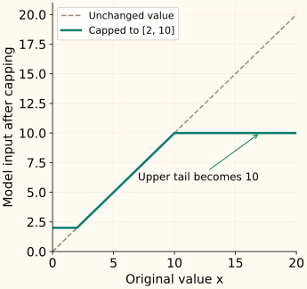

Winsorizing and Capping
Capping replaces values outside chosen bounds with the bounds themselves. The rows stay in the dataset, but their extreme magnitudes no longer reach the model. That is an information tradeoff, not a correction of the original measurement.
Winsorization usually refers to capping tails using sample ranks or quantiles. The broader term capping also covers domain-based limits and limits derived from rules such as IQR fences. First understand the replacement operation; then specify how the bounds are chosen.
What happens to one value?
Let $x$ be an original value, $L$ a lower bound and $U$ an upper bound, with $L\le U$. Call the capped value $x_{\mathrm{cap}}$. Values inside the interval stay unchanged:
The inner maximum lifts values below $L$ up to $L$. The outer minimum lowers values above $U$ down to $U$. For bounds [2, 10], 1 becomes 2, 5 stays 5, and 20 becomes 10.

Capping and trimming do different things
Use [1, 2, 3, 4, 5, 6, 7, 20] with bounds [2, 10]. Capping produces [2, 2, 3, 4, 5, 6, 7, 10], keeping all eight rows. Trimming removes values outside the interval, leaving [2, 3, 4, 5, 6, 7].
| Operation | Values contributing to the mean | Mean |
|---|---|---|
| Original | 1, 2, 3, 4, 5, 6, 7, 20 | 6.0000 |
| Cap | 2, 2, 3, 4, 5, 6, 7, 10 | 4.8750 |
| Trim | 2, 3, 4, 5, 6, 7 | 4.5000 |
A winsorized mean averages the modified values. A trimmed mean averages the retained subset. Neither is automatically the original population’s arithmetic mean. Likewise, capping a training target changes the outcome the model learns to predict; keep that choice consistent with the question you intend to answer.
Choosing bounds is a separate decision
| Source of bounds | What must be justified? |
|---|---|
| Domain limits | Why these values define the useful model-input range. A known recording error may deserve correction instead. |
| Training quantiles | The tail fractions and the finite-sample quantile convention. |
| Training IQR fences | The quartile method and fence multiplier, plus why flags should become capped values. |
One-sided capping is also possible when only one tail needs treatment. The bounds need not be symmetric. With empirical quantiles, ties and finite samples mean the proportion of changed values need not equal the named tail fraction exactly.
Rank-based winsorization can differ from quantile clipping
On our eight observations, replacing one value at each end uses bounds 2 and 7. SciPy’s winsorize with limits (0.125, 0.125) follows that count-based convention. In contrast, interpolated 12.5th and 87.5th percentiles from NumPy’s linear method are 1.875 and 8.625.
Compare the two conventions on the same sample
import numpy as np
from scipy.stats.mstats import winsorize
train = np.array([1., 2., 3., 4., 5., 6., 7., 20.])
print(winsorize(train, limits=(0.125, 0.125)).tolist())
lower, upper = np.quantile(train, [0.125, 0.875], method="linear")
print(lower, upper)
print(np.clip(train, lower, upper).tolist())
[2.0, 2.0, 3.0, 4.0, 5.0, 6.0, 7.0, 7.0]
1.875 8.625
[1.875, 2.0, 3.0, 4.0, 5.0, 6.0, 7.0, 8.625]The difference is expected. When a tail count is not an integer, SciPy’s inclusive option additionally controls truncation versus rounding of that count. “Winsorize 12.5%” is not enough information to reproduce every implementation.
Keep the learned bounds fixed for future data
Using the fitted linear-quantile bounds above, future values [0, 5, 12, 100] become [1.875, 5, 8.625, 8.625]. Keep a flag alongside the capped feature if knowing that it crossed a bound is useful.
Apply the stored bounds without changing the raw input
future = np.array([0., 5., 12., 100.])
changed = (future < lower) | (future > upper)
capped = np.clip(future, lower, upper)
print(capped.tolist())
print(changed.tolist())
print(future.tolist())
[1.875, 5.0, 8.625, 8.625]
[True, False, True, True]
[0.0, 5.0, 12.0, 100.0]The flag preserves whether a boundary was crossed, not how far. It also distinguishes an original value exactly equal to the bound from one moved there. Preserve the raw source separately when later investigation matters.
Check the cost of flattening the tails
Capping can limit extreme feature magnitudes, but a large value may carry important signal. Compare the fitted model with and without capping on the same held-out workload. Inspect performance on capped and uncapped cases as well as the aggregate metric.
If you clip features at prediction time, evaluate that same feature transformation on the held-out data. Do not also erase difficult evaluation rows or cap their targets merely to improve the reported error. The treatment chapter develops this distinction.
A rising fraction of capped future values can indicate that the training reference no longer describes the current population. Do not silently re-fit the bounds without considering the model trained on the old representation. For cross-validation, the bounds must be learned inside each training fold; see preprocessing pipelines.
C++: return the value and the change flag
Here the bounds are already fitted. Validate their order before calling std::clamp. This version rejects nonfinite inputs explicitly; missing-value handling belongs in the surrounding preprocessing policy.
Compile the fixed-bound capper
#include <algorithm>
#include <cmath>
#include <iomanip>
#include <iostream>
#include <stdexcept>
struct Capped { double value; bool changed; };
Capped cap(double x, double lower, double upper) {
if (!std::isfinite(x) || !std::isfinite(lower) || !std::isfinite(upper)
|| lower > upper)
throw std::invalid_argument("finite values and ordered bounds required");
return {std::clamp(x, lower, upper), x < lower || x > upper};
}
int main() {
std::cout << std::fixed << std::setprecision(3) << std::boolalpha;
for (double x : {0., 5., 12., 100.}) {
const auto result = cap(x, 1.875, 8.625);
std::cout << result.value << " changed=" << result.changed << "\n";
}
}
1.875 changed=true
5.000 changed=false
8.625 changed=true
8.625 changed=trueReferences and further reading
- SciPy: winsorize — tail replacement and the count-rounding convention.
- NumPy: clip — the fixed-bound replacement operation.
- NumPy: quantile — the interpolation convention used to fit bounds in the example.